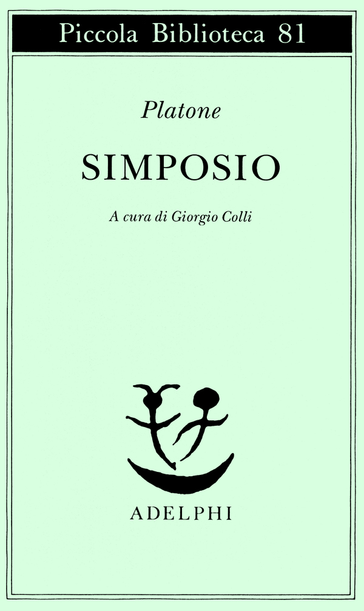
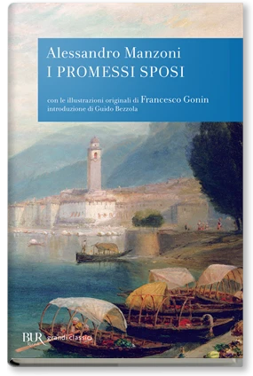

43:04 · 11 OPERE
Yanis Varoufakis e gli "adulti" nella stanza dei bottoni.
Il filo del discorso
Il confronto fra le memorie politiche di Yanis Varoufakis e i saggi di Ivan Illich serve al relatore per discutere il rapporto fra cultura, responsabilità e accesso al potere. La prima parte contesta una informazione che, a suo giudizio, sostituisce la comprensione con il prestigio dei personaggi e la semplificazione spettacolare. Attraverso Platone, Kafka e altri richiami letterari, propone la cultura come apertura di possibilità e come esercizio della coscienza. Il dialogo fra Varoufakis e Larry Summers sugli insider e gli outsider introduce il dilemma fra influenza nelle istituzioni e libertà di denunciarne i comportamenti. Illich offre poi una critica della trasformazione dei bisogni in servizi prescritti dai professionisti e della perdita di capacità autonome. Il finale invita a verificare ciò che si sa oltre i titoli accademici. Le valutazioni sulle élite restano attribuite al relatore; la scheda distingue il testo dei libri dalla sua interpretazione, corregge alcune sovrapposizioni storiche e dichiara i riferimenti non identificati.
I libri nel discorso

Adults in the Room: My Battle with Europe’s Deep Establishment
Copertina: Vintage Digital, 4 maggio 2017, edizione elettronica, ISBN 9781473547827. Copertina inglese di riferimento; non attribuita al volume del relatore.
Immagine autentica dell’opera, controllata visivamente; l’edizione di riferimento non è attribuita al filmato.
Adults in the Room nominato e presentato; lettura del dialogo con Larry Summers a partire da circa 1515 secondi.
Passaggio 3:56 ↗ · Fonti e libro ↗
La Repubblica
Identificazione probabile
Copertina: Laterza · La Repubblica · edizione con testo a fronte di riferimento
Immagine associata all’ISBN di riferimento e controllata visivamente; edizione e traduzione non identificate come quelle citate o lette nel video.
Paideia e governanti riluttanti al potere: probabile richiamo alla Repubblica, senza titolo esplicito nel passo.
Passaggio 7:12 ↗ · Fonti e libro ↗
Simposio
Identificazione probabile
Copertina: Adelphi · Piccola Biblioteca 81 · 1979
Copertina autentica dell’edizione di riferimento, controllata visivamente. Non identifica l’esemplare letto o citato nel video.
Socrate paragonato ai Sileni che racchiudono immagini divine: probabile Simposio 215a–b.
Passaggio 11:28 ↗ · Fonti e libro ↗
Davanti alla legge
Copertina: Vitalis, Edizione di Praga, 2024
L'indice del campione Vitalis colloca Davanti alla legge a pagina 42. Edizione italiana illustrativa, traduzione di Giuseppina Gatta, postfazione di Harald Salfellner tradotta da Manuela Boccignone; non identificata nel video.
Parabola dell’uomo e del guardiano davanti alla legge richiamata per discutere le soglie del sapere.
Passaggio 13:34 ↗ · Fonti e libro ↗
Bibbia
Copertina: San Paolo, 2014 · Nuova Versione dai Testi Antichi · edizione di riferimento
Dio domanda ad Adamo dove sia: richiamo riconoscibile a Genesi 3,9, interpretato dal relatore.
Passaggio 14:12 ↗ · Fonti e libro ↗
Delitto e castigo
Copertina: BUR · introduzione di Clara Strada Janovic, edizione di riferimento 1983
Immagine autentica dell’opera, controllata visivamente; l’edizione di riferimento non è attribuita al filmato.
Raskolnikov e il confronto con l’investigatore richiamati come esempio di coscienza.
Passaggio 15:31 ↗ · Fonti e libro ↗
Le avventure di Pinocchio. Storia di un burattino
Copertina: Gangemi · illustrato da Franco Staino, 2009
Immagine autentica dell’opera, controllata visivamente; l’edizione di riferimento non è attribuita al filmato.
Pinocchio e Grillo Parlante richiamati come figure narrative della coscienza.
Passaggio 15:45 ↗ · Fonti e libro ↗
Fedro
Identificazione probabile
Copertina: BUR · 2006 · a cura di Roberto Velardi
Immagine autentica dell’opera, controllata visivamente; l’edizione di riferimento non è attribuita al filmato.
Socrate impara dagli uomini e non dagli alberi: probabile Fedro 230d, titolo non pronunciato.
Passaggio 22:04 ↗ · Fonti e libro ↗Per una storia dei bisogni
Legatura dell’edizione inglese: Immagine della legatura marrone dell’edizione inglese Pantheon Books, New York, 1978, xiii e 143 pagine. Testo italiano: Mondadori, marzo 1981, traduzione di Ettore Capriolo.
Copertina rigida marrone senza sovraccoperta: titolo inglese impresso, autore riscontrato nel record Open Library. Non è la copertina italiana Mondadori 1981 e non si attribuisce al volume filmato.
Per una storia dei bisogni nominato, traduzione del 1981; lettura di passi sulle professioni e sui bisogni.
Passaggio 31:26 ↗ · Fonti e libro ↗
Descolarizzare la società. Una società senza scuola è possibile?
Copertina: Mimesis, collana Mimesis. Biblioteca, 2019, ISBN 9788857556321. Edizione italiana moderna di riferimento, non prima edizione dell’opera.
Immagine autentica dell’opera, controllata visivamente; l’edizione di riferimento non è attribuita al filmato.
Descolarizzare la società esplicitamente nominato come opera di Illich.
Passaggio 32:11 ↗ · Fonti e libro ↗
I promessi sposi
Identificazione probabile
Copertina: BUR · 1998 · introduzione di Guido Bezzola
Immagine autentica dell’opera, controllata visivamente; l’edizione di riferimento non è attribuita al filmato.
Bravi e don Abbondio: allusione riconoscibile ai Promessi sposi, con sovrapposizione del rapporto fra i personaggi.
Passaggio 34:37 ↗ · Fonti e libro ↗Minutaggi ricavati da testi automatici, da riascoltare. Le identificazioni probabili sono segnalate accanto ai libri.